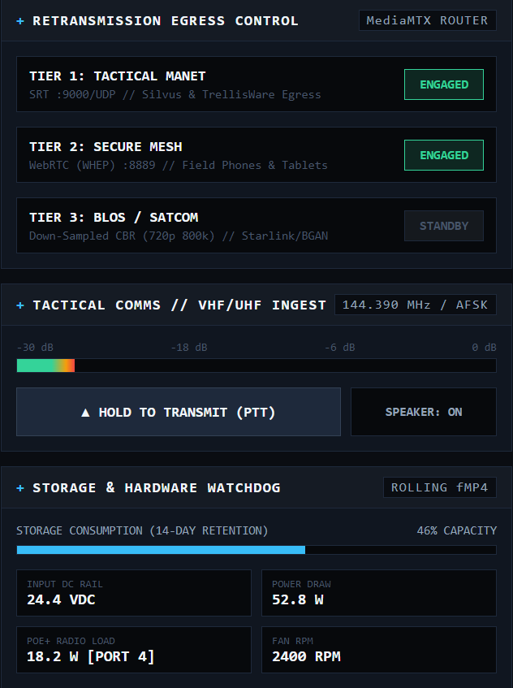
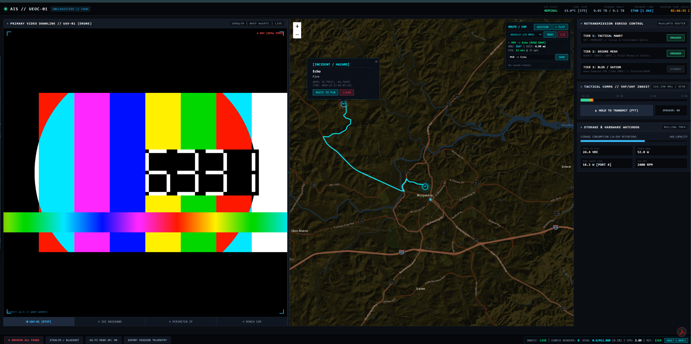

SOFTWARE CORE COMPLETE // HARDWARE INGEST PHASE
UEOC Tactical Common Operating Picture (COP) & Edge Relay
Air-gapped, self-hosted situational awareness and multi-tier video retransmission console engineered for mobile tactical flypacks and emergency operations centers.


- Air-Gapped Tactical GIS: Offline Leaflet engine (Z9–Z17) with an automated on-demand proxy cacher, multi-client COP marker sync, and live GPS unit tracking.
- Automated Route & Transit Solver: Computes road-snapped or direct offline azimuth vectors, distance, and multimodal ETAs (Foot, Ground, UAV) with one-click GeoJSON export for ATAK/QGIS.
- Multi-Tier MediaMTX Egress: Sub-second WebRTC ingest paired with API-driven MANET SRT, Secure Mesh WHEP, and on-demand 720p/800k CBR SATCOM transcoding.
- Self-Healing Edge Stack: Containerized Nginx, MediaMTX, and FileBrowser vault backed by boot-persistent
systemdtelemetry daemons.